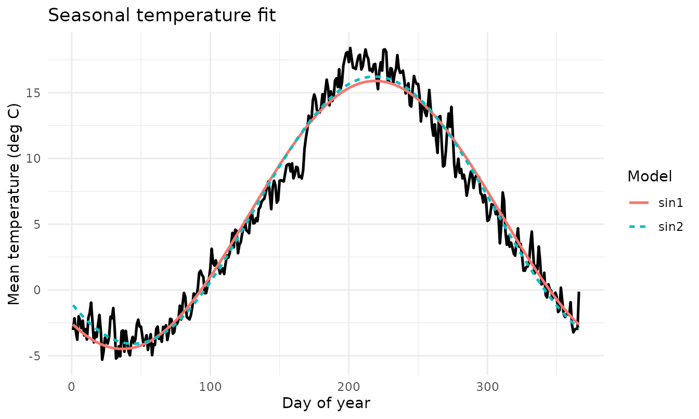

Why climecol?
climecol provides a lightweight, reproducible workflow
for archiving, analyzing, and visualizing weather and climate data in
ecological and infectious-disease modeling contexts.
It includes:
- Curated daily weather data (Newfoundland example dataset)
- Fast, dependency-free photoperiod (daylength) functions
- Simple tools for quality checks, gap handling, and plotting
- Functions designed for offline and reproducible pipelines
Installation
# install.packages("devtools")
devtools::install_github("jbaafi/climecol")Then load the package:
Loading and validating weather data
You can import and validate your weather data from a .csv file as follows:
wx <- read_weather_csv("data-raw/combined_data.csv")
wx <- normalize_weather_names(wx)
qa <- validate_weather(wx, temp_bounds = c(-50, 50), rain_max = 150, snow_max = 60)
qa$summaryThe validate_weather() summary reports:
- record span (span_start, span_end)
- missing days, out-of-bounds temperature values
- and unrealistic rainfall/snow totals flagged during checks.
Photoperiod (daylength)
The package implements the Forsythe et al. (1995) solar-geometry approximation to compute daylength (in hours) using only date and latitude, no timezone or longitude required.
Example: daily photoperiod
pp_nl <- photoperiod_year(2024, location = "St John's")
head(pp_nl)
#> date daylength_hours lat location
#> 1 2024-01-01 8.517220 47.56 st_johns
#> 2 2024-01-02 8.532937 47.56 st_johns
#> 3 2024-01-03 8.549903 47.56 st_johns
#> 4 2024-01-04 8.568104 47.56 st_johns
#> 5 2024-01-05 8.587527 47.56 st_johns
#> 6 2024-01-06 8.608155 47.56 st_johnsQuick plot:
plot(pp_nl$date, pp_nl$daylength_hours, type = "l",
xlab = "date", ylab = "Daylength (hours)",
main = "Photoperiod — St. John's, NL (2024)")Monthly means and multi-site comparison
pp_nl_m <- photoperiod_year(2024, location = "St John's", aggregate = "month")
pp_nb_m <- photoperiod_year(2024, location = "Saint John", aggregate = "month")
head(pp_nl_m)
#> date daylength_hours lat location
#> 1 2024-01-01 8.91655 47.56 st_johns
#> 2 2024-02-01 10.20720 47.56 st_johns
#> 3 2024-03-01 11.88795 47.56 st_johns
#> 4 2024-04-01 13.65218 47.56 st_johns
#> 5 2024-05-01 15.16109 47.56 st_johns
#> 6 2024-06-01 15.91251 47.56 st_johns
head(pp_nb_m)
#> date daylength_hours lat location
#> 1 2024-01-01 9.172983 45.27 saint_john
#> 2 2024-02-01 10.354056 45.27 saint_john
#> 3 2024-03-01 11.902529 45.27 saint_john
#> 4 2024-04-01 13.528932 45.27 saint_john
#> 5 2024-05-01 14.910968 45.27 saint_john
#> 6 2024-06-01 15.593079 45.27 saint_johnTip: Site names are case-insensitive and punctuation-agnostic.
"St John's","st_johns","St.Johns"→st_johns(NL);"Saint John"/"st john"→saint_john(NB).
If you provide a numeric latitude instead of location, results are labeled lat_
.
Example dataset: Newfoundland (2008–2023)
climecol ships daily weather dataset for Newfoundland
and Labrador.
data(weather_nl)
library(dplyr)
glimpse(weather_nl)
#> Rows: 5,844
#> Columns: 13
#> $ date <date> 2008-01-01, 2008-01-02, 2008-01-03, 2008-01-04, 2008-01-…
#> $ Year <int> 2008, 2008, 2008, 2008, 2008, 2008, 2008, 2008, 2008, 200…
#> $ Month <int> 1, 1, 1, 1, 1, 1, 1, 1, 1, 1, 1, 1, 1, 1, 1, 1, 1, 1, 1, …
#> $ Day <int> 1, 2, 3, 4, 5, 6, 7, 8, 9, 10, 11, 12, 13, 14, 15, 16, 17…
#> $ tmin_c <dbl> -6.6, -8.1, -11.0, -12.6, -9.6, -10.5, -4.2, -1.2, -2.5, …
#> $ tmax_c <dbl> 1.6, 2.0, -0.4, -5.9, -2.4, -2.5, 2.5, 3.8, 0.5, 9.5, 0.5…
#> $ tavg_c <dbl> -2.5, -3.1, -5.7, -9.3, -6.0, -6.5, -0.9, 1.3, -1.0, 4.8,…
#> $ rain_mm <dbl> 0.2, 0.0, 0.2, 0.0, 0.0, 0.0, 0.0, 0.6, 0.8, 8.2, 0.0, 11…
#> $ precip_mm <dbl> 2.0, 4.5, 0.2, 0.0, 1.6, 2.2, 0.0, 0.6, 1.8, 8.2, 0.0, 11…
#> $ snow_cm <dbl> 1.8, 5.0, 0.0, 0.0, 2.6, 6.4, 0.0, 0.0, 1.8, 0.0, 0.0, 0.…
#> $ Station.Name <chr> "ST JOHN'S A", "ST JOHN'S A", "ST JOHN'S A", "ST JOHN'S A…
#> $ Climate.ID <dbl> 8403506, 8403506, 8403506, 8403506, 8403506, 8403506, 840…
#> $ station <chr> "ST JOHN'S A", "ST JOHN'S A", "ST JOHN'S A", "ST JOHN'S A…Normalize column names for consistency:
df <- normalize_weather_names(weather_nl)Quick rainfall visualization
plot_rainfall(df)
To facet by year:
plot_rainfall(df, facet_by_year = TRUE)Exploring rainfall summaries
Monthly rainfall totals
library(dplyr)
df <- normalize_weather_names(weather_nl)
df <- summarise_rainfall_monthly(df)
head(df)
#> # A tibble: 6 × 3
#> Year Month Rain_mm
#> <int> <int> <dbl>
#> 1 2008 1 75.7
#> 2 2008 2 70.6
#> 3 2008 3 103.
#> 4 2008 4 105
#> 5 2008 5 119.
#> 6 2008 6 129.Exporting data
Save any computed or fitted data to CSV for modeling or sharing:
out_file <- file.path(tempdir(), "photoperiod_st_johns_2024.csv")
write.csv(pp_nl, out_file, row.names = FALSE)
out_file
#> [1] "/tmp/RtmpmIcf1Q/photoperiod_st_johns_2024.csv"The file is written to a temporary directory during vignette build. Replace tempdir() with your project path in real workflows.
Seasonal climatology: sinusoidal fits
The function fit_seasonal_temp() estimates smooth
seasonal temperature cycles using sinusoidal functions (e.g., sin1,
sin2).
fit_out <- fit_seasonal_temp(weather_nl, funcs = c("sin1","sin2"), plot = TRUE)
knitr::kable(fit_out$metrics, digits = 3, caption = "Model comparison by AIC and R²")| model | AIC | R2 |
|---|---|---|
| sin1 | 1203.960 | 0.971 |
| sin2 | 1158.752 | 0.975 |
if (!is.null(fit_out$plot)) fit_out$plot
Extending temperature fits with custom models
You can also define your own models using nonlinear formulas.
# Standardize column names
df <- normalize_weather_names(weather_nl)
# Define your custom model (formula uses mean_temp ~ ... and day_of_year)
custom_models <- list(
quad = list(
formula = mean_temp ~ a + b * day_of_year + c * I(day_of_year^2),
start = list(a = mean(df$tavg_c, na.rm = TRUE), b = 0, c = 0) # <- REQUIRED
)
)
# Fit: built-ins via `funcs=`, user models via `custom=`
res <- fit_seasonal_temp(
df,
funcs = "sin1", # optional: keep a built-in for comparison
custom = custom_models,
plot = TRUE
)
# Results
res$metrics # AIC and R2 per model
#> # A tibble: 2 × 3
#> model AIC R2
#> <chr> <dbl> <dbl>
#> 1 sin1 1204. 0.971
#> 2 quad 1984. 0.758
res$plot # overlay plotSeasonal photoperiod fitting
Analogously, you can fit smooth periodic functions to average daylength:
res <- fit_seasonal_photo(
location = "St John's",
years = c(2023, 2024),
funcs = c("sin1","sin2"),
plot = TRUE
)
res$metrics
#> # A tibble: 2 × 3
#> model AIC R2
#> <chr> <dbl> <dbl>
#> 1 sin1 -934. 0.999
#> 2 sin2 -943. 0.999
res$plot
Custom models are also supported:
res_custom <- fit_seasonal_photo(
location = "St John's",
years = c(2023, 2024),
funcs = "sin1",
custom = list(
cos1 = list(
formula = avg_photo ~ a + b * cos(2*pi*day_of_year/365),
start = list(a = 12, b = 6)
)
)
)
res_custom$metrics
#> # A tibble: 2 × 3
#> model AIC R2
#> <chr> <dbl> <dbl>
#> 1 sin1 -934. 0.999
#> 2 cos1 495. 0.967Key functions at a glance
| Category | Function | Purpose |
|---|---|---|
| Import / Validation |
read_weather_csv(),
validate_weather()
|
Read and quality-check weather data |
| Standardization | normalize_weather_names() |
Harmonize column names across datasets |
| Gap handling |
complete_daily_calendar(),
summarise_gaps(), impute_weather()
|
Detect and fill missing dates/values |
| Photoperiod |
daylength_f95(), photoperiod_year(),
photoperiod_sites()
|
Compute daylight hours from date and latitude |
| Climate fitting |
fit_seasonal_temp(),
fit_seasonal_photo()
|
Fit sinusoidal seasonal models for temperature or daylength |
| Rainfall simulation |
sample_rainfall_by_month(),
simulate_rainfall_scenarios()
|
Generate stochastic rainfall or scenario time series |
| Visualization | plot_rainfall() |
Plot daily or multi-year rainfall with optional yearly facets |
| Export | export_weather() |
Save validated or imputed data to CSV for modeling |
References
Forsythe, W. C., Rykiel, E. J., Stahl, R. S., Wu, H., & Schoolfield, R. M. (1995).
A model comparison for daylength as a function of latitude and day of year. Ecological Modelling, 80, 87–95.